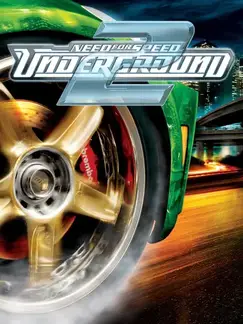

 |
|
| Tiempo de juego | 23m 5s |
| Última actividad | 16/1/2026 12:10:46 |
| Añadido | 26/4/2025 1:40:24 |
| Modificado | 10/12/2025 13:45:46 |
| Estado de finalización | Jugado |
| Librería | Playnite |
| Fuente | |
| Plataforma | PC (Windows) |
| Fecha de lanzamiento | 9/11/2004 |
| Puntuación de la Comunidad | 83 |
| Puntuación de la Crítica | 78 |
| Puntuación de usuario | |
| Género | Racing |
| Desarrollador | EA Black Box |
| Editor | Electronic Arts |
| Característica | Multiplayer Single Player Split Screen |
| Enlaces | + Underground2.net Mod |
| Tag | |
Si "Underground 1" fue el Big Bang, la secuela fue la creación del universo entero. "Need for Speed: Underground 2" agarró la fórmula de la revolución tuner, la metió en un mundo abierto masivo y nos dijo: "la ciudad es tuya". Es, para muchos, el pico absoluto de la saga y el rey de los juegos de tuning.
La diferencia clave fue Bayview. Por primera vez en la saga, tenías una ciudad gigante para explorar libremente. No había más menús. Tenías que manejar por las calles para encontrar las carreras, los talleres de tuneo y los eventos ocultos, todo mientras escuchabas los rumores por la radio. La sensación de ir "paseando" con tu nave tuneada, buscando piques, era una inmersión total.
Y el taller... mamita, el taller. La personalización, que ya era zarpada en el primero, acá se fue al carajo. Podías cambiarle hasta los espejos, el tablero, meterle equipos de música en el baúl, ponerle llantas que giran solas ("spinners"), suspensiones hidráulicas... el nivel de detalle para dejar tu auto como una obra de arte grasa y hermosa era demencial.
El juego respiraba cultura tuner de los 2000 por todos lados. La estética de neón, las carreras nocturnas, y una banda sonora que es para ponerla en un cuadro. Arrancar el juego y que empiece a sonar el "Riders on the Storm" de The Doors con Snoop Dogg es un momento grabado a fuego en la memoria de toda una generación.
"Underground 2" es un monumento a la libertad y la personalización. Es un juego que te daba un arenero gigante y un set de herramientas increíble para que crearas tu propia fantasía fierrera. Una experiencia tan completa y adictiva que, casi dos décadas después, sigue siendo la vara con la que se miden todos los juegos del género.
• Mod HD - Underground2.net